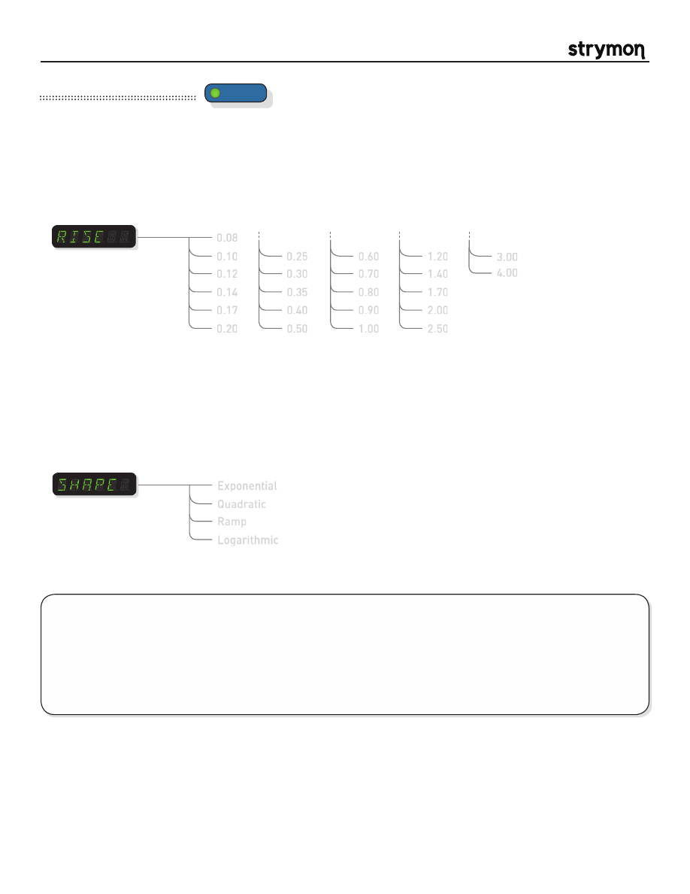

Mobius
-
User Manual
®
pg 17
TYPE
push (bank/BPM)
hold (save)
push (param)
hold (global)
VALUE
PARAM 1
PARAM 2
B
TAP
A
SPEED
DEPTH
LEVEL
BANK DOWN
BANK UP
FILTER
DESTROYER
VIBE
ROTARY
FLANGER
PHASER
CHORUS
FORMANT
AUTOSWELL
VINTAGE TREM
PATTERN TREM
QUADRATURE
®
Mod Machines: Autoswell
An automatic volume swell effect triggered by the input signal. Various rise times and swell curves are available. A chorus
effect can be added to the swelled signal.
PARAMETERS:
TIPS & TRICKS:
The SPEED and DEPTH knobs control a chorus effect that is added to the swelled signal. With the
DEPTH knob at minimum, no chorus effect is added.
Try the LOGARITHMIC shape with fast rise times to allow for more separation between notes when playing single-note
phrases.
Try the QUAD Shape with longer rise times to get smooth ambient swells for chordal work.
0.08
0.10
0.12
0.14
0.17
0.20
0.25
0.30
0.35
0.40
0.50
0.60
0.70
0.80
0.90
1.00
Rise Time
:
Sets the time constant of the swell rise time. The display indicates the ramp time
in seconds.
1.20
1.40
1.70
2.00
2.50
Exponential
Quadratic
Ramp
Logarithmic
Shape
:
Sets the shape of the swell.
Exponential
– Traditional ‘first order’ response. It starts to rise quickly, and then
slows as it approaches full volume.
Quadratic
– A ‘second order’ swell response. This gives a smoother rise and
approach to full volume.
Ramp
– A linear ramp that has a constant slope from rise to full volume.
Logarithmic
– The opposite of the Exponential response, this choice rises slowly
and picks up steam as it approaches full volume.
4.00
3.00